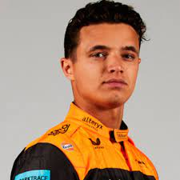

| Imagen | Equipo | Nombre | Nacionalidad | Numero |
|---|---|---|---|---|
| Alfa Romeo | Valtteri Bottas | Finlandés | 77 | |
 |
Alfa Romeo | Guanyu Zhou | Chino | 24 |
| Alpine | Fernando Alonso | Español | 14 | |
| Alpine | Esteban Ocon | Francés | 31 | |
| AlphaTauri | Pierre Gasly | Francés | 10 | |
| AlphaTauri | Yuki Tsunoda | Japonés | 22 | |
| Aston Martin | Sebastian Vettel | Alemán | 5 | |
| Aston Martin | Lance Stroll | Canadiense | 18 | |
| Ferrari | Charles Leclerc | Monegasco | 16 | |
| Ferrari | Carlos Sainz | Español | 55 | |
| Haas | Kevin Magnussen | Danés | 20 | |
| Haas | Mick Schumacher | Alemán | 47 | |
|  | McLaren | Lando Norris | Británico | 4 |
| McLaren | Daniel Ricciardo | Australiano | 3 | |
| Mercedes | Lewis Hamilton | Británico | 44 | |
| Mercedes | George Russell | Británico | 63 | |
| Red Bull | Sergio Pérez | Mexicano | 11 | |
| Red Bull | Max Verstappen | Holandés | 1 | |
| Williams | Nicholas Latifi | Canadiense | 6 | |
| Williams | Alex Albon | Tailandés | 23 |